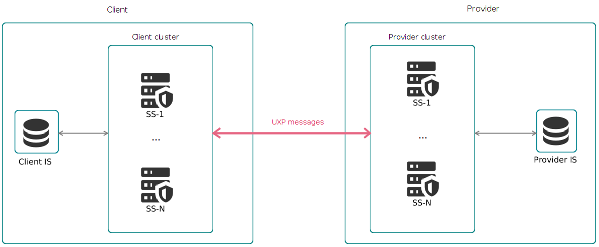
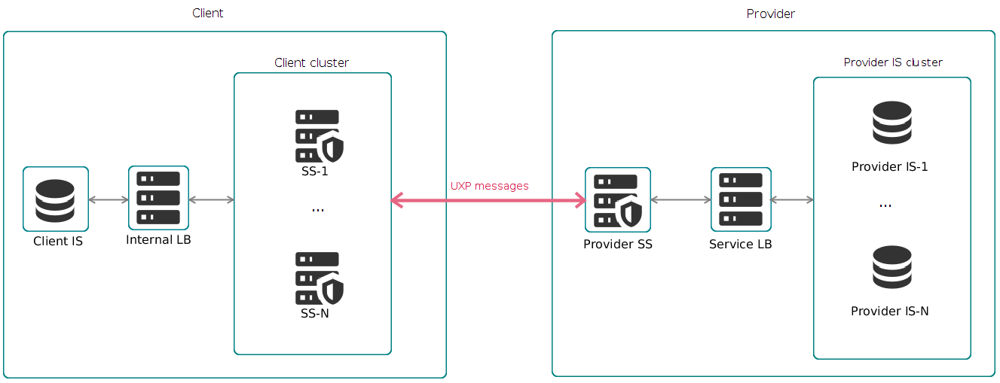

1. Introduction
1.1. Target Audience
The intended audience of this guide is the system administrators responsible for High Availability or Load Balancing solutions for the UXP Security Server software.
The document is intended for readers with a good knowledge of Linux server management, computer networks, and the functioning principles of UXP technology.
Most actions in this guide assume that the reader has access to the command line interface of the security server.
1.2. High Availability and Load Balancing for UXP Security Server
The High Availability (HA) solution for UXP security servers relies on several security servers being able to process UXP messages for the same UXP service. In essence, this means that HA is provided by a cluster of security servers each having the same service configuration.
A Security Server cluster can be combined with a third-party load balancer (LB) to also improve performance (see Section Load Balancers).
1.3. References
-
[Apache] Apache HTTP Server Project, https://httpd.apache.org/
-
[HAProxy] HAProxy TCP/HTTP Load Balancer, http://www.haproxy.org/
-
[JSON] Introducing JSON, http://json.org/
-
[Nginx] Nginx Load Balancer, https://www.nginx.com/
-
[UA-UXP-IG-GRAYLOG] Cybernetica AS. Graylog for UXP Servers: Installation and Configuration Guide. Document ID: UA-UXP-IG-GRAYLOG
-
[UA-UXP-IG-SS] Cybernetica AS. UXP Security Server: Installation and Configuration Guide. Document ID: UA-UXP-IG-SS
-
[UA-UXP-UG-PMA] Cybernetica AS. UXP Security Server: Configuring Monitoring of Security Server. Document ID: UA-UXP-UG-PMA
-
[UA-UXP-UG-SS] Cybernetica AS. UXP Security Server: User Guide. Document ID: UA-UXP-UG-SS
2. Security Server Cluster for High Availability
In order to ensure high availability of a UXP service, a security server cluster can be set up.
For the purposes of UXP, a cluster is formed by two or more security servers (called nodes in the context of a cluster) which are capable of processing requests for the same UXP service. This means that all nodes of a cluster must have the same configuration.
A cluster can be set up on the service client side or the service provider side. See the client cluster and provider cluster sections for more details about the necessary configuration for either setup.

2.1. Client Security Server Cluster
A client security server cluster provides high availability for communication between service client information system (IS) and client security servers. In this scenario, some logic must be implemented on the client IS side so that the IS can choose to which security server it sends any given request.
This means that each node of the cluster must have:
-
the same client(s) registered;
-
a valid global configuration;
-
a functional authentication key and certificate;
-
a functional signing key and certificate for each client;
-
if HTTPS connection is used between security server and information system, a functional security server internal TLS key and certificate and a functional internal TLS key and certificate for each information system.
For more details about each of these items, see the UXP Security Server User Guide [UA-UXP-UG-SS].
The client security server cluster is compatible with third-party load balancers (see Section Internal Load Balancer).
2.2. Provider Security Server Cluster
A provider security server cluster provides high availability for communication between client security server and provider security servers.
This means that each node of the cluster must have:
-
the same client(s) registered;
-
the same services registered (with same member, subsystem and service code);
-
the same access rights for the services;
-
a valid global configuration;
-
a functional authentication key and certificate;
-
a functional signing key and certificate for each client;
-
if HTTPS connection is used, a functional security server internal TLS key and certificate and a functional internal TLS key and certificate for each information system.
For more details about each of these items, see the UXP Security Server User Guide [UA-UXP-UG-SS].
| A node must be running to be included in the cluster - there is no built-in mechanism to turn on new nodes to replace failing nodes. |
2.2.1. Selection of Target Cluster Node
Starting from version 1.20, security servers by default use the round-robin strategy to forward requests to a service provider cluster as opposed to the previously used fastest-connected strategy.
With the round-robin strategy, a client security server cyclically distributes the requests between the service provider’s cluster nodes that respond to the Transmission Control Protocol (TCP) connection establishment request.
The round-robin strategy balances the load between different nodes and does not prefer a single node like the fastest-connected strategy.
With the fastest-connected strategy, a client security server forwards the request to the provider’s cluster node that responds the fastest to a TCP connection establishment request. The fast response can be affected by network topology or the order in which the nodes were contacted.
The fastest-connected strategy does not provide any load balancing.
The prerequisite for both the round-robin and fastest-connected strategies to be successful is that each node can act as the service provider, i.e. each node has a functioning and up-to-date configuration.
2.2.2. Disabling Faulty Cluster Nodes
Optionally, cluster owners can set up a service that turns off a node when it answers negatively to a status information request (see Section proxyOff). This helps to avoid UXP messages being sent to those cluster nodes that are unable to process UXP messages.
2.3. Security Server Status Information
Each security server provides a status information service that returns whether that security server currently fulfills the main requirements to process UXP messages.
| There are some conditions that the status information service cannot check, but which still cause a security server to fail in processing UXP messages (for example, problems on the timestamping service side). For the list of conditions checked by status information, see the Status Information Service Response section. |
Both the proxyOff feature and some load balancers can use this information to ensure that requests are only forwarded to security servers that can process UXP messages based on the security server status information. See the Load Balancers section for more information about integrating status information with load balancers.
2.3.1. Status Information Configuration
|
Before editing the configuration file, pause the integrity checker on the security server by running: After making your changes, update the hashes with: |
To configure the status information service for a security server, the [status-service] section must be added to the configuration file /etc/uxp/conf.d/local.ini of that security server:
[status-service]
; The status service listen address.
listen-address=127.0.0.1
; The status service listen HTTP port.
listen-port=2082
; The comma-separated list of host IP-addresses and/or CIDR notations that
; determine allowed addresses to request status information.
allowed-hosts=127.0.0.1The status service listen address (listen-address) is localhost by default. If the status service must be accessed by an external service (for example, a load balancer), then the listen address must be changed to the IP address of the security server or to 0.0.0.0.
The default listening port (listen-port) is 2082.
The only default allowed host (allowed-hosts) is localhost. The list of allowed hosts must be changed to contain the addresses where status information requests are made from (for example, load balancers).
All allowed hosts (addresses written in a comma-separated list) can request the status information, for example by making the following request:
curl -v http://<security-server-address>:<status-request-listen-port>/statususing the command line tool curl.
This service must be called using the GET method.
2.3.2. Status Information Service Response
The status information endpoint returns status code HTTP 200 (meaning the status is UP) for a given security server if and only if all of the following are true:
-
security server proxy process is running;
-
global configuration is valid;
-
the authentication key is active, valid (based on the date in the certificate) and OCSP response status is good;
-
the token storing the authentication key (software token) is logged in.
If at least one of the above is not true, the endpoint returns the status code HTTP 503 (meaning the status is DOWN).
If request is made from unauthorized IP, the endpoint returns the HTTP error code 403.
In case of any other errors, the endpoint returns the appropriate HTTP error code.
2.4. proxyOff
You can configure your cluster nodes to stop accepting connections if their status is DOWN. This feature is called proxyOff and it helps to give higher reliability to security server clusters and those load balancers which cannot integrate the status information service directly. See the Load Balancers section for more information about combining proxyOff with load balancers.
The proxyOff feature helps to avoid UXP messages being sent to those cluster nodes that answer to a TCP request while actually being unable to process UXP messages.
| You do not need to configure the status information service to configure the proxyOff feature. This is because proxyOff requests the status information internally without needing to use the status information service. |
|
Before editing the configuration file, pause the integrity checker on the security server by running: After making your changes, update the hashes with: |
To configure the proxyOff feature on a cluster node, add the [proxy-status-check] section to the configuration file /etc/uxp/conf.d/local.ini of that node:
[proxy-status-check]
; Whether to stop listening for HTTP(S) connections from client applications
; in case the proxy status is down.
clientproxy-listening-switch-enabled=true
; Whether to stop listening for HTTPS connections from the service client's
; security server(s) in case the proxy status is down.
serverproxy-listening-switch-enabled=true
; Proxy status check interval in seconds (minimum value is 10).
interval-seconds=15The interval-seconds parameter determines how often the proxyOff feature checks the status of the security server.
2.4.1. Client Clusters
If the clientproxy-listening-switch-enabled option is set to true on a security server and that security server responds to a status information request with status DOWN, the security server stops accepting connections on the port which listens for connections from service client information systems (applications). The default ports for this are 80 and 443.
When the security server status response becomes UP again, the port starts accepting connections again.
2.4.2. Provider Clusters
If the serverproxy-listening-switch-enabled option is set to true on a security server and that security server responds to a status information request with status DOWN, the security server stops accepting connections on the port which listens for connections from service client security servers. The default port for this is 5500.
When the security server status response becomes UP again, the port starts accepting connections again.
2.5. Setting Up and Maintaining a Security Server Cluster
To achieve a security server cluster, you must set up multiple security servers with identical subsystems and services configuration.
If the configuration of a security server cluster changes, you must manually propagate the changes to all cluster nodes.
Objects that must be propagated to all cluster nodes are:
-
security server clients;
-
services;
-
service access rights;
-
all endpoints of all REST services;
-
all local groups that are used for access rights;
-
-
connection type (for communication with information systems);
-
information system internal TLS certificates.
As an alternative to manually updating all clients and services one-by-one on each cluster node, it is possible to export and import the configuration of services from one security server to another. This is done as follows:
-
Install and configure multiple security servers if you have not yet. Make sure that the security servers have the same server owner but different server codes.
-
Choose one security server to be the one where you apply the configuration changes (source security server).
-
Update the configuration of services on the source security server.
-
Export the cluster node configuration file from that source security server.
-
Import that cluster node configuration file to each other node of the cluster (target security server).
You can use the configuration import-export to setup the cluster by importing the configuration to cleanly installed security servers and also use that process to update the configuration in already functioning cluster nodes.
| Signing or authentication keys and certificates must be managed manually as they are not contained in the cluster node configuration file. |
2.5.1. Export Services and Access Rights
| If the version of the target security server is different than the version of the security server where the cluster node configuration file was created, the import may fail. It is recommended to update all of the security servers first and only then create the cluster node configuration file and import it. |
To export all security server clients with services, and their access rights in to a file, follow next steps:
-
The usage of the export utility:
serverconf-export [-d <dir> | -p <absolute-path-to-exported-file>]For example, to export the configuration to the
/var/tmpfolder, run the command:sudo su - uxp -c "serverconf-export -d /var/tmp"The utility will save the configuration in a JSON file
uxp-serverconf-<hostname>-<timestamp>-<version>.jsonin the/var/tmp/directory.The utility logs the result of the export (success or failure) directly to the console. You can change the logging configuration in the /etc/uxp/conf.d/serverconf-cli-logback.xmlfile.If you want to have a different name for your configuration file, you can use
-pparameter to provide the full path and name for the file. For example:sudo su - uxp -c "serverconf-export -p /var/tmp/ss1-conf.json"An example of the exported configuration:
You can trace back a configuration file to the security server it was created in, as the file contains the IP and hostname of the security server the file was exported from. { "metadata": { "version": 2, "timestamp": 1719411206511, "securityServerId": { "xRoadInstance": "INSTANCE", "memberClass": "GOV", "memberCode": "00000000", "serverCode": "CODE" }, "securityServerInternalIp": "192.168.12.34", "hostname": "server-hostname" }, "configuration": { "clients": [ { "clientId": { "xRoadInstance": "INSTANCE", "memberClass": "GOV", "memberCode": "00000000", "subsystemCode": "Subsystem" }, "connectionType": "SSLAUTH", "restApis": [ { "endpoints": [ { "path": "*", "generated": true, "addedDate": 1661768036942 } ], "headers": [], "disabled": false, "disabledNotice": "Out of order", "serviceCode": "serviceCode", "serviceVersion": "serviceVersion", "baseUrl": "https://<url>", "sslAuthentication": false, "timeout": 60, "addedDate": 1661768036942 }] }] } } -
Save the file hash so you can later compare the hash to the hash of the cluster node configuration file you will import to make sure the file is the same and unaltered.
You can also use the serverconf-metadata tool to check the SHA-512 hash of a cluster node configuration file at any time.
-
Next step is to import the file to the target security server. See the next section.
2.5.2. Import Services and Access Rights
The cluster node configuration file can be used to import services and access rights to security server cluster nodes.
Importing File
You can use the configuration file exported from the source server to import services and access rights to a newly installed security server or update an already running cluster node.
-
Copy the exported configuration file (exporting described in Section Export Services and Access Rights) from the source security server to the target security server. The
scpcommand requires you to have a working authentication method between the source and target security servers. Alternatively, you could use a program like WinSCP on your computer to move the file.Usage of the command to be run on the source security server:
sudo scp <full-path-to-configuration-file> \ <username>@<target-ss-address>:<full-path-to-configuration-file>-
<full-path-to-configuration-file>is the full path and name of the file with the configuration of source security server; -
<username>is the username of the System Administrator account on target security server; -
<target-ss-address>is the IP address or hostname of the target security server.For example:
sudo scp /var/tmp/uxp-serverconf-securityserver1-20240913-143423-2.json \ john@192.168.0.1:/var/tmp/uxp-serverconf-securityserver1-20240913-143423-2.json
-
-
Check the
/var/tmp/folder on the target security server to see if moving the file was successful.ls /var/tmp/ -
Change the privileges of the configuration file, for example:
sudo chown uxp:uxp /var/tmp/uxp-serverconf-securityserver1-20240913-143423-2.json -
Import services and access rights from the configuration file to the target security server:
When importing the configuration to Trembita 2 security server, the changes do not modify files checked by Integrity Checker, therefore no actions are required with Integrity Checker. Usage of the import utility:
serverconf-import [-m [a|i|c]] [-r [a|i]] <full-path-to-configuration-file>Example usage to import the configuration, where new clients from the configuration will be added to the target security server and clients that are already in the target server are kept:
sudo su - uxp -c "serverconf-import -m c -r i \ /var/tmp/uxp-serverconf-securityserver1-20240913-143423-2.json"The parameters -m (missing) and -r (redundant) determine how conflicts regarding security server clients in the configuration file and target server are handled (see Section Handling Differences).
For clients that are in the configuration file but missing (
-m) in the target server, the available actions are:a(abort),i(ignore),c(add client). If no action is specified, the default actionc(add client) is used.For clients that are already in the target server but not in the configuration file (redundant (
-r)), the available actions are:a(abort),i(ignore). If no action is specified, the default actioni(ignore) is used.The utility logs the result of the import (success or aborted) and lists the missing and redundant clients directly to console by default. Note that the result is "aborted" only when the aoption was chosen for missing (or redundant) clients for the import and missing (or redundant) clients were found, causing the import to be aborted. For imports failed due to system errors, the failure is also logged directly to console by default. You can change the logging configuration in the/etc/uxp/conf.d/serverconf-cli-logback.xmlfile. -
If the import was successful, you should see the subsystems and their services in the security server user interface. You can delete the subsystems that have become redundant.
-
Before the service clients can start consuming the services, make sure that:
-
the new security server is registered in the UXP instance;
-
the new security server has at least one timestamping service chosen;
-
each member has a working signing key;
-
each subsystem is registered as a client in that security server on the UXP instance;
-
information systems that mutually authenticate with the security server have the TLS certificate of the new security server.
-
Handling Differences
During import, it must be decided how to handle differences between which clients are present in the cluster node configuration file and which are present on the security server the file is being imported to.
- If there are clients present in the cluster node configuration file but missing from the target SS, you have the following choices
-
-
The missing clients are added to the security server. Note that they must be registered with the governing authority afterwards. See the UXP Security Server User Guide [UA-UXP-UG-SS] for registration details.
-
The missing clients are ignored. This means the missing clients and all of their services are not imported to the security server.
-
The import is aborted if a missing client is detected. None of the cluster node configuration file contents are added to the target security server if the import is aborted.
-
No matter which choice you make, the missing clients will be listed when the import is finished (unless the import fails due to a system error). If you need the missing clients to be on the target security server, you can add and register them. This can be done by a user with Server Administrator role in the security server user interface. See the UXP Security Server User Guide [UA-UXP-UG-SS] for details on how to do this.
- If there are clients present in target SS but missing from cluster node configuration file, you have the following choices
-
-
The redundant clients are ignored. These clients and their services will be left on the security server.
-
The import is aborted if a redundant client is detected. None of the cluster node configuration file contents are added to the target security server if the import is aborted.
-
In both cases, the redundant clients will be listed when the import is finished (unless the import fails due to a system error). If you need the redundant clients to be removed from the target security server, you can unregister and delete them. This can be done by a user with Server Administrator role in the security server user interface. See the UXP Security Server User Guide [UA-UXP-UG-SS] for details on how to do this.
|
For SOAP services, the WSDL file is not redownloaded or reparsed. For REST APIs added from OpenAPI descriptions, the OpenAPI description is not refreshed. The SOAP services and REST APIs are imported exactly in the state they existed at when the cluster node configuration file was created. |
Comparing File Metadata
To help ensure you are using the correct cluster node configuration file, you can use the server configuration metadata utility to check the file metadata.
Usage:
serverconf-metadata <full-path-to-configuration-file>For example, run the command:
sudo su - uxp -c "serverconf-metadata \
/var/tmp/uxp-serverconf-securityserver1-20240913-143423-2.json"Sample output:
Exported configuration metadata
Generation date: 2024-09-13 14:34:23
Security server ID: UXP_EX/COM/MEMBER1/SAMPLESUB
Security server address: uxp-example-ss1 (192.168.113.6)
File version: 1
File hash (SHA-512):
55:7B:26:A6:98:64:AA:7E:95:CB:34:3D:5B:34:D9:A5:
CC:EC:27:79:11:65:CF:C3:38:5E:5A:B2:C1:17:32:31:
51:A3:42:CE:44:31:0D:B9:C7:25:B1:F7:16:98:C8:D0:
D0:9F:53:28:5A:BF:E2:B1:7B:A7:84:58:52:48:55:AFYou can check this output to confirm that the cluster node configuration file you are using is generated at the expected time in the expected security server. Furthermore, you can compare the file hash from this output to the file hash you stored after exporting configuration from security server. If the hashes do not match, then either different files were used or the file contents were manually changed at some point.
2.5.3. Adding Additional Security Server Node
To add an additional security server node, follow these steps:
-
Install and configure a new security server following the instructions in the UXP Security Server: Installation and Configuration Guide. Make sure that the new security server has the same server owner as the existing node(s) in the cluster, but different server code.
Each node must independently manage and utilize its singing and authentication keys and certificates, as they are not transferable between nodes. This principle also applies to other TLS keys and certificates used within the security server, such as the internal TLS certificate.
-
Configure Rsyslog on the new security server following the instructions in the Graylog for UXP Servers Installation and Configuration Guide.
-
If Zabbix and/or Elasticsearch are configured for the security server cluster, configure them for the new node as well by following the instructions in the UXP Security Server: Configuring Monitoring of Security Server.
-
Export the cluster node configuration file from the existing security server node by following the instructions in Section Export Services and Access Rights.
-
Import that cluster node configuration file to the new node by following the instructions in Section Import Services and Access Rights.
-
Ensure that information systems that mutually authenticate with the security server have the internal TLS certificate of the new security server. To export the internal TLS certificate, follow the instructions in the UXP Security Server: User Guide.
-
Configure for every imported member a signing key and certificate by following the instructions in the UXP Security Server: User Guide.
-
Register every imported subsystem as a client in that security server on the UXP instance by following the instructions in the UXP Security Server: User Guide.
-
If load balancers are used, update their configuration if necessary.
2.5.4. Removing Security Server Node from Cluster
To remove the security server node from the cluster, follow these steps.
-
If the security server is already registered in the UXP governing authority (GA), notify the GA about its removal in accordance with the organizational procedures of your UXP instance (e.g., through email or support portal). Include the server code in your removal request.
After the GA has applied the changes, the security server will be removed from the global configuration.
-
Remove the internal TLS certificate(s) of the security server from the relevant (client/server) information systems connected to the security server for cleanup if configured.
-
Remove the node address from the load balancer(s) if configured.
2.5.5. Changing Security Server Node IP Address or DNS Name
To change the IP address or DNS name of the security server node, follow these steps.
-
Complete the steps outlined in the Changing Security Server IP Address or DNS Name section of the UXP Security Server: User Guide.
-
If load balancer(s) are used, update their configuration if necessary.
3. Load Balancers
To add more performance advantage, a third-party load balancer (LB) must be used.
There are two supported load balancing scenarios, with some instructions for setting them up:
-
Internal load balancing — LB between service client information system and service client security server cluster (see Section Internal Load Balancer);
-
Service load balancing — LB between provider security server and service provider information system (see Section Service Load Balancer).
Load balancers in other scenarios are not officially supported.
Some LBs (e.g., HAProxy [HAProxy]) are capable of directly integrating the status information service and can remove non-functioning nodes of your cluster themselves. If you are using such a LB for internal load balancing, it is recommended to keep the proxyOff feature disabled (it is disabled by default).
However, if your internal LB cannot integrate the status information service (e.g., Apache or Nginx), it is recommended to enable the proxyOff feature.
proxyOff stops accepting connections to listening ports of security servers with DOWN status. This helps to keep messages from being relayed to cluster nodes that are unable to process UXP messages.

3.1. Internal Load Balancer
An internal load balancer can be set up between service client information system and service client security server cluster.
3.1.1. HAProxy Example
This is a specific example of setting up and using the HAProxy [HAProxy] load balancer. While the details for other load balancers can be different, the main approach should be similar.
To set up HAProxy as an internal LB, follow these steps:
-
Have a cluster of security servers in service client role, with nodes SS-1, …, SS-N.
-
Make sure each node can act as client to a UXP service by adding a client in each node and registering a signing certificate for the client.
-
-
Install HAProxy on a separate server:
sudo apt update sudo apt install haproxy haproxyctl -
Allow the HAProxy server to request security server status information:
-
In each node of the security server cluster:
Before editing the configuration file, pause the integrity checker on the security server by running:
sudo uxp-integrity pauseAfter making your changes, update the hashes with:
sudo uxp-integrity update-
add HAProxy server to allowed hosts field (
allowed-hosts) in the[status-service]section of the/etc/uxp/conf.d/local.inifile:[status-service] ; The comma-separated list of host IP-addresses and/or CIDR notations that ; determine allowed addresses to request status information. allowed-hosts=<HAProxy-server-IP> -
if you have not already, set up the status information service for the security server, see instructions in Section Status Information Configuration.
-
restart the monitoring service on the security server:
sudo systemctl restart uxp-monitor
-
-
-
On the HAProxy server, add UXP security servers to the HAProxy configuration file
/etc/haproxy/haproxy.cfg:listen inside-service bind *:80 option httpchk GET /status http-check expect rstatus 200 default-server inter 15s check port 2082 server SS-1 <security-server-1-ip>:80 server SS-2 <security-server-2-ip>:80 retries 1 option redispatch balance roundrobinThis example configures HAProxy to listen on HTTP port 80 and load balance incoming requests between two security servers SS-1 (deployed on
<security-server-1-ip>) and SS-2 (deployed on<security-server-2-ip>), both listening for requests on default service client’s security server HTTP port 80. HAProxy is configured to use security server’s status service/statuson port 2082, which it queries in 15 second intervals to check whether the security server can be used (expecting a response with HTTP status 200) — if a server is down, it is removed from rotation. Since checks are made in 15 second intervals, a security server node may become unavailable before it is determined to be down, for this reason retries withredispatchoption are configured, which will make HAProxy retry the connection attempt to a different node. It should be sufficient to set the number of retries to the number of nodes in the cluster to ensure availability in cases where at least one node is operational. -
Check validity of HAProxy configuration file:
sudo haproxyctl configcheck-
Expected response is:
Configuration file is valid
-
-
Load the new configuration file:
sudo systemctl restart haproxy -
Check that the setup was successful by using the status information service through HAProxy:
sudo haproxyctl show health-
Expected response lists all security server cluster nodes:
# pxname svname status weight inside-service FRONTEND OPEN inside-service SS-1 UP 1 ... inside-service SS-N UP 1 inside-service BACKEND UP 2 -
Note that in this example, the weight of all security servers is set to be equal.
-
After setting this up, the LB forwards each request from the service client information system to one of the cluster nodes with a positive status information response.
3.2. Service Load Balancer
A service load balancer can be set up between service provider information system and provider security server.
In this setup, multiple instances of the service provider information system exist and a LB is used to choose which information system instance the service provider security server communicates with.
No special action must be taken on the security server to use a service LB.
4. Troubleshooting
4.1. Import configuration file failed: <path-to-configuration-file>
Example error:
Import configuration file failed: /var/tmp/uxp-serverconf-securityserver1-20240913-143423-2.jsonIf you get the import configuration file failed error when you are importing the configuration to the target security server, make sure that the file has correct privileges (uxp uxp).
Check the current privileges of the configuration file:
ls -l /var/tmp/uxp-serverconf-securityserver1-20240913-143423-2.jsonYou might see that the file is owned by the user you used to move the file between servers (john):
-rw-r----- 1 john john 52831 Jan 14 14:01 uxp-serverconf-securityserver1-20240913-143423-2.jsonChange the file ownership to uxp:
sudo chown uxp:uxp /var/tmp/uxp-serverconf-securityserver1-20240913-143423-2.jsonRetry to import the configuration on target server.
4.2. Failed to connect to <IP-address> port <port> after 0 ms: Connection refused
Example error:
Failed to connect to 192.168.12.34 port 2082 after 0 ms: Connection refusedWhen an external request to the security server status information endpoint results in Connection refused, make sure that you have changed the default value of listen-address to the security server IP or a wildcard IP (0.0.0.0 for IPv4 / [::] for IPv6). The default value 127.0.0.1 allows status requests only from the same server.
-
Before editing the configuration file, pause the integrity checker on the security server by running:
sudo uxp-integrity pause -
In the
/etc/uxp/conf.d/local.inifile, set thelisten-addressto the security server IP address.[status-service] ; The status service listen address. listen-address=<security-server-IP> -
After updating the file, update the integrity checker hashes with:
sudo uxp-integrity update -
Restart the monitoring service on the security server:
sudo systemctl restart uxp-monitor -
Retry the request from an external server (the IP of the external server must be listed in
allowed-hostsin thelocal.inifile).